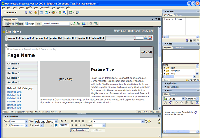
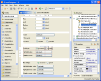
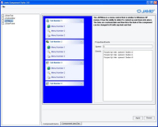
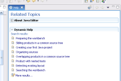

| During the last months I received positive feedback about the Common Components and the JTaskPaneGroup too. Its Windows look and feel helped developers to build task-oriented applications (as seen here and here). The JTaskPaneGroup prefers you add actions as children (it creates the hyperlinks) but is not limited to them, any Swing component can be added. |
Miscellaneous comments got from emails, forums |
|
I'm collecting all feedbacks, ideas about the JTaskPaneGroup and JXScrollUp here together with some answers or comments about the suggestions. It should help us in deciding where we want to go with the JXScrollUp or its replacements. I like the idea of being able to have a titled, collapsable panel, without implying I'll have any actions or actionable content inside. (source: forum) > I Agree. Component must accept any other Swing component has child. might be nice to have collapsing in different directions--have title bar as a vertical bar, with panel expanding to left or to right, or have title on bottom. (source: forum) > Component must support collapsing in different directions: bottom to top, top to bottom, right to left, left to right I imagine we might have several triggers for expand/collapse: click icon; hover title bar or hover icon; mouse over title bar double-click title bar...actually, that makes me think of something else. What we have there is some component with a specific listener setup, attached to an action. We could call this "trigger-action": the trigger is what initiates the action, and a trigger can be bound to a component. Trigger.onDoubleClick(titlebar, "expandOrCollapseAction"); something like that. We could stop checking for click count... (source: forum) > Interesting but I think this Trigger mechanism can be implemented outside of the JXScrollUp subproject. However the JXScrollUp should provide an action to toggle its state. I'd like to be able to use the collapsible feature without the title bar or button on the top right. I just need the animated pane. (source: l2fprod) > I'm answering my own comment here. I think the collapsible feature
should not be mixed with features like the titlebar or the left/right
decorations. It should make it more reusable. I do also like having an extended collapsable panel that
is task- or action-oriented. I'm not sure exactly what that means except
that there is some simple way to attach an action bundle to a task panel
and have it "display the right thing", correct? > Using the contentPane approach of the JXScrollUp this is definitely possible. Any container could make it in the collapsible/scrollable/sliding pane. Last point would be--how does this tie into a stackable sidebar as in Netscape/Mozilla? Do you think that would be an entirely different component, or is it somehow related to this task/action thing? (source: forum) > I do not have netscape installed but IIRC the component would share at least the JXScrollUp behavior. Has anyone any idea what it might take to get theese components working with JGoodies look and feels? Im considering using a couple of these components, bringing them in to our Spring Rich Client application..with JGoodies look and feel etc.... (source: clientjava) > Component must comply with Swing look and feel architecture. At least,
it must implement pluggable UIs for commonly used look and feels. |
|
Equivalent component found in existing applications |
|
| Given the feedback, it appears we may want more than the JTaskPaneGroup (or in fact we want less to be able to create more derived components). Let's look at components having this collapsing feature or like. | |
| Dreamweaver MX 2004 has a similar component. In the screenshots, you find multiple instances of this component stacked vertically on the right. The component can contain any other components, it can be collapsed/expanded by using the arrow on the left. It has a title, the title has a bold face when expanded, the title is a hyperlink - when clicked it expands/collapses the component. |  |
| JFormDesigner, a GUI designer, has a palette of components. The palette is organized by category: Components, Containers, Windows,... |  |
| Javio Component Suite provides components which slide in and out. It has a JTaskPaneGroup equivalent too. |  |
| Of course, Eclipse IDE has its own version of the collapsible pane (version 3.1M6 in the screenshot). No animation. |  |
Prototyping |
|
I've put together a small demo showing the JTaskPaneGroup where the animation of the content panel is handled by the JXScrollUp (actually by the same code of the JXScrollUp put in a JCollapsiblePane). It requires JRE 1.4 |
|
Last update: June 6, 2005
{kind=link}
{kind=link}
{kind=link}